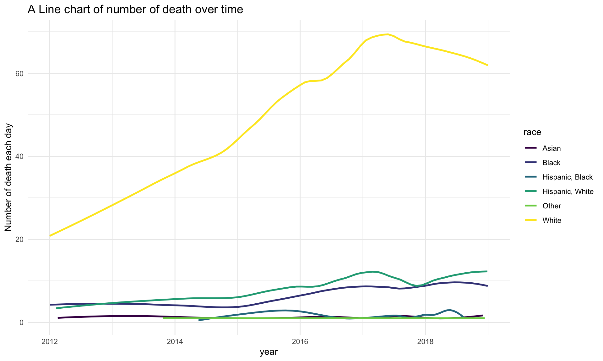
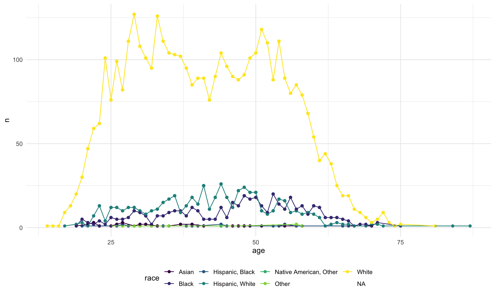
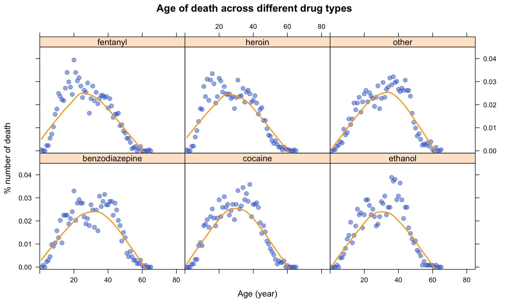
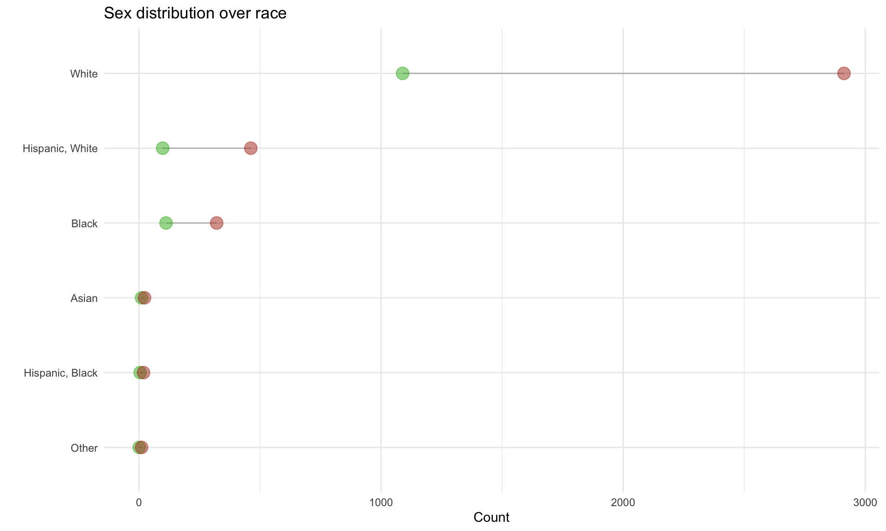
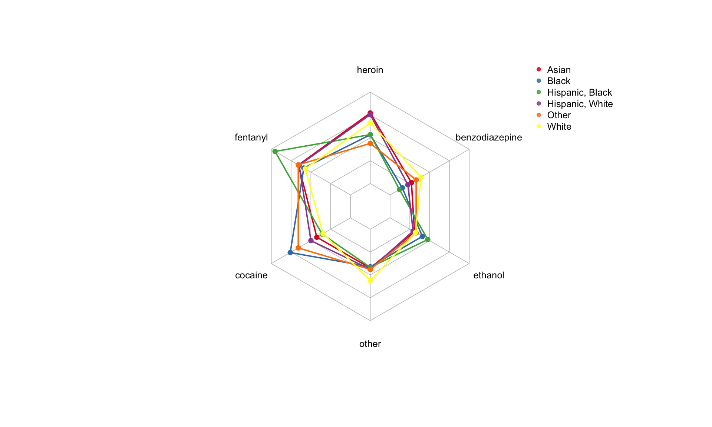

# from data.gov
drug_death=
read_csv("./data/Accidental_Drug_Related_Deaths_2012-2018.csv") %>%
janitor::clean_names() %>%
separate(date, into = c("date", "time"), sep = 11) %>%
select(-time) %>%
separate(date, into = c("month", "day", "year"), sep = "/", convert = TRUE, remove = FALSE) %>%
mutate(
date = as.Date(date, format = '%m/%d/%Y'),
death_city_longlat = sub("\\).*", "", sub(".*\\(", "", death_city_geo)) ) %>%
separate(col = death_city_longlat, into = c("death_city_lat", "death_city_long"), sep = "," ,remove = FALSE) %>%
mutate(
injury_city_longlat = sub("\\).*", "", sub(".*\\(", "", injury_city_geo)) ) %>%
separate(col = injury_city_longlat, into = c("injury_city_lat", "injury_city_long"), sep = "," ,remove = FALSE) %>%
mutate(
residence_city_longlat = sub("\\).*", "", sub(".*\\(", "", residence_city_geo)) ) %>%
separate(col = residence_city_longlat, into = c("residence_city_lat", "residence_city_long"), sep = "," ,remove = FALSE) %>%
##dropping pre-split variables for latitude and longitude, dropping date_type because it is uninformative for this analysis
select(-residence_city_longlat, -death_city_longlat, -injury_city_longlat, -residence_city_geo, -injury_city_geo, -death_city_geo, -mannerof_death, -date_type) %>%
mutate(race = recode(race,
"Asian Indian" = "Asian",
"Asian, Other" = "Asian",
"Chinese" = "Asian",
"Hawaiian" = "Other"),
race = na_if(race, "Unknown")) ## Parsed with column specification:
## cols(
## .default = col_character(),
## Age = col_double()
## )## See spec(...) for full column specifications.drug_death %>%
filter(race %in% c("White","Black", "Hispanic, White", "Asian", "Hispanic, Black", "Other")) %>%
group_by(race, year, month) %>%
mutate(
n = n()
) %>%
ungroup() %>%
ggplot(aes(x = date, y = n, group = race, color = race)) +
geom_smooth(se = FALSE, span = 0.45, method = 'loess') +
theme_minimal() +
theme(
legend.position = "right",
plot.title = element_text(size = 14)
) +
ggtitle("A Line chart of number of death over time") +
xlab("year") +
ylab("Number of death each day")
drug_death %>%
group_by(age, race) %>%
mutate(n = n()) %>%
ungroup() %>%
select(age, race, n) %>%
ggplot(
aes(x = age, y = n, color = race)
) +
geom_point() +
geom_line()
drug_corr =
drug_death %>%
filter(
race %in% c("White","Black", "Hispanic, White", "Asian", "Hispanic, Black", "Other"),
sex %in% c("Female", "Male")) %>%
select(age, heroin:other) %>%
NAer() %>%
pivot_longer(
heroin:other,
names_to = "drug",
values_to = "flag"
) %>%
mutate(
flag = as.numeric(ifelse(flag == "Y", "1", "0"))
) %>%
mutate(
drug = ifelse(drug %in% c("heroin", "fentanyl", "cocaine", "ethanol", "benzodiazepine"), drug, "other")
) %>%
group_by(age, drug) %>%
mutate(
n = sum(flag)
) %>%
select(-flag) %>%
unique() %>%
ungroup() %>%
group_by(drug) %>%
mutate(
pctn = n / sum(n)
) %>%
select(-n) %>%
arrange(drug, age)
xyplot(
pctn ~ age | drug,
data = data.frame(drug_corr),
pch=20 ,
type = c("p", "smooth"),
col.line = "orange",
lwd = 2,
cex=1.5 ,
col=rgb(0.2,0.4,0.8,0.5),
xlab = "Age (year)",
ylab = "% number of death",
main = "Age of death across different drug types",
xlim = c(0, 85),
ylim = c(-0.001, 0.045)
)
drug_death %>%
filter(
sex %in% c("Female", "Male")
) %>%
group_by(race, sex) %>%
mutate(
n = n()
) %>%
select(race, sex, n) %>%
unique() %>%
ungroup() %>%
pivot_wider(
names_from = "sex",
values_from = "n"
) %>%
na.omit() %>%
mutate(
race = forcats::fct_reorder(race, Male)
) %>%
ggplot()+
geom_segment(aes(x = race, xend = race, y = Female, yend = Male), color = "grey") +
geom_point(aes(x = race, y = Female), color=rgb(0.2,0.7,0.1,0.5), size=4.5) +
geom_point( aes(x = race, y = Male), color=rgb(0.7,0.2,0.1,0.5), size=4.5 ) +
coord_flip()+
theme_minimal() +
theme(
legend.position = "right",
) +
xlab("") +
ylab("Count") +
labs(title = "Sex distribution over race")
drug_spider =
drug_death %>%
select(race, heroin:other) %>%
filter(
race %in% c("White","Black", "Hispanic, White", "Asian", "Hispanic, Black", "Other")
) %>%
NAer() %>%
pivot_longer(
heroin:other,
names_to = "drug",
values_to = "flag"
) %>%
mutate(
flag = as.numeric(ifelse(flag == "Y", "1", "0"))
) %>%
mutate(
drug = ifelse(drug %in% c("heroin", "fentanyl", "cocaine", "ethanol", "benzodiazepine"), drug, "other")
) %>%
group_by(race, drug) %>%
mutate(n = sum(flag)) %>%
select(-flag) %>%
unique() %>%
arrange(race, desc(n)) %>%
ungroup() %>%
group_by(race) %>%
mutate(
pctn = n/sum(n)
) %>%
select(-n) %>%
pivot_wider(
names_from = "drug",
values_from = "pctn"
) %>%
ungroup()
rownames(drug_spider) = drug_spider$race
drug_spider = drug_spider %>% select(-race)
drug_spider = rbind(rep(0.35,6) , rep(0,6) , drug_spider)
coul = brewer.pal(6, "Set1")
colors_border = coul
colors_in = alpha(coul,0.85)
radarchart(drug_spider,
axistype = 0,
pcol=colors_border,
plwd = 1.9,
plty = 1,
cglcol="grey",
cglty=1,
axislabcol="black",
cglwd=0.8,
vlcex = 0.8
)
legend(x=1.1, y=1.52, legend = c(rownames(drug_spider))[3:8], bty = "n", pch=20 , col=colors_in , text.col = "black", cex=0.8, pt.cex=1)